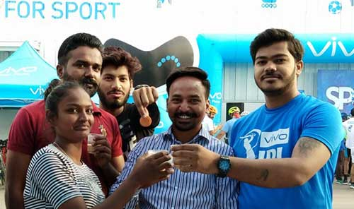
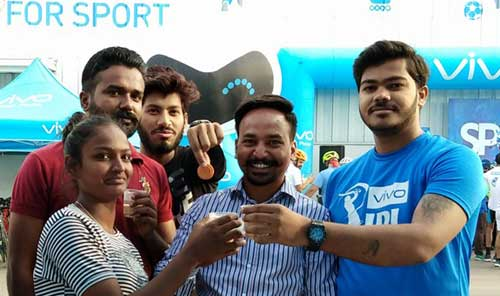

On 29th of August 2019, the 114th birth anniversary of Major Dhyan Chand the Great Sports Cultural Club (India) hosted an award function to honour several sports players, sports coach, social workers, artists and many other social activists.
To distribute awards to the awardees, Honourable Member of Legislative Assembly Shri Om Prakash Soni (Cabinet Minister,Punjab Govt.) was invited as Chief Guest with District Education Officer and Director of Holy Heart School Madam Anjana Seth.
On the Occasion of National Sports Day at Virsa Vihar, councillor Vikas Soni with Punjab State Congress General Secretary Rajiv Bhagat and President Navdeep Singh Sahota presenting the awards to renowned personality of city Amritsar.
Famour Punjabi Writer Baljeet Kaur Talwandi, Comrade Giani Gurdeep Singh, Bibi Surjit Kaur, Punjabi Actor Pritpal Pali, Social Worker Sham Lal Trehan and others were awarded on the day of function.

Jointly sponsored by Vivo & Decathlon in Amritsar City, President Navdeep Singh Sahota was invited as chief guest and to distribute awards to the winners.
The program
 


A Football Cup hosted by Great Sports Cultural Club (India) at Ryan Internation School, Amritsar.
Honourable Madam Smt. Navjot Kaur Sidhu (Former Member of Legislative Assembly, Punjab) with Punjab Home Gaurds and Civil Defence Department Commandent S. Jaskaran Singh has been invited to distribute prizes to winners and their teams.
There are numerous cricket tournaments has been organized by Great Sports Cultural Club (India) with the motive of "Drug Free Youth".
Sh. Navdeep Singh Sahota (Founder & President of Great Sports Cultural Club, India) always be eager to make India a Drug Free nation by promoting sports and to develop fit Indian Culture.
The Great Sports Cultural Club (India) Collaborated with Decathlon, Vivo and Guru Nanak Dev University to host a Marathon Race in Amritsar. Great Sports Cultural Club usaully hosted these marathons to promote sports players on new levels.
Honorable S. Rajinder Mohan Singh Chhina, Chancellor of Khalsa College, Amritsar was present at the moment to distribute awards to the players.
In Year 2017, The Great Sports Cultural Club (India) hosted a Road Marathon sponsored Vivo. Numerous State and District Level Players was present at the moment to support the motive of "Drug Free Youth"
To celebrate the magnificent performances of daughters of India, The Great Sports Cultural Club (India) hosted numerous award functions to promote "Beti Bachao, Beti Padhao" campaign by Honourable Prime Minister Shri Narendra Modi Ji.
Many Female Principals, International & National Sports Players and more than 150 girls students with good academics record were awarded by Honourable D.I.G. B.B. Gosai. The event was organized at Ajanta Public School in noted as first ever event by Great Sports Cultural Club (India).